| Student name | Jeyaram M |
|---|---|
| Student ID | 2025AE05470 |
| Course | Machine Learning Operations (MLOps), AIMLCZG523 |
| Lab | Prayogshala Virtual Lab · MLOPS (AIMLZG523) · https://prayogshala.bits-pilani.ac.in |
| Lab VM | Rocky Linux 9.5 · 4 vCPU · 15 GiB RAM · AWS ap-south-1 (ip-10-3-23-9) |
| Repository | https://github.com/callmejei/mlops_2025ae05470_assignment |
| Main report | report/report.pdf (design, EDA, modelling, CI/CD) |
| Date | 19 October 2026 |
| Stage on the lab VM | Result |
|---|---|
| Lint (flake8) and 14 unit tests (pytest) | Passed |
| Data download, EDA, training with MLflow tracking | Same metrics as the original run (CV ROC-AUC 0.911, test 0.961) |
| Docker image build and container smoke test | Passed |
| Docker Compose: API, Prometheus, Grafana | Running, API healthy |
| Kubernetes: manifest and Helm chart on minikube | 2/2 pods each, LoadBalancer IPs assigned |
| /predict on all three endpoints | Identical response (disease, confidence 0.9478) |
| Monitoring: JSON logs, Prometheus target, Grafana dashboard | Live data |
Access followed the Prayogshala Virtual Lab Manual (CSIS, WILP): open the portal → Continue with BITS SSO → log in with eLearn credentials → select MLOPS (AIMLZG523) → Launch Lab → wait for the VM to reach RUNNING → Connect, which opens an XFCE desktop in the browser.
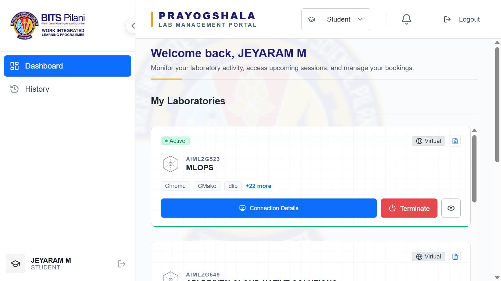
Fig 1. Prayogshala portal: MLOPS (AIMLZG523) virtual lab active for Jeyaram M
| Item | Lab VM |
|---|---|
| OS / hardware | Rocky Linux 9.5 (Blue Onyx), 4 vCPU, 15 GiB RAM |
| Python | 3.12.9 (conda base). The project's pinned versions all support 3.12, so no changes were needed. |
| Containers | Docker 28.0.1 (usable without sudo), Docker Compose plugin |
| Kubernetes | minikube v1.35.0 (Docker driver) running Kubernetes v1.32.0. kubectl comes from minikube kubectl; Helm v3.16.2 was downloaded by the setup script. |
| Persistent storage | ~/workspace (AWS EFS). Everything outside it is lost when the VM is terminated. |
~/workspace persists; installed software is temporary; sessions end after 15 minutes idle; a stopped VM is terminated after 60 minutes. So the repository lives in ~/workspace, the Python virtualenv lives in ~/.venvs (fast local disk, recreated in about 75 s), and the whole stack is rebuilt by one idempotent script.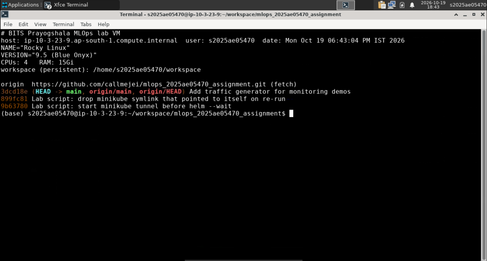
Fig 2. Lab VM identity (host, user, OS, CPU, RAM), persistent workspace, and the cloned repository at the latest commit
Everything is driven by scripts/lab_setup.sh, which is in the repository. From a fresh VM, two commands reproduce the full stack:
cd ~/workspace git clone https://github.com/callmejei/mlops_2025ae05470_assignment.git bash mlops_2025ae05470_assignment/scripts/lab_setup.sh 2>&1 | tee ~/workspace/lab_setup.log
| # | Stage | What the script does |
|---|---|---|
| 1 | Python environment | Creates ~/.venvs/heart and installs requirements.txt |
| 2 | CI pipeline | Runs scripts/ci_local.sh: flake8 → pytest → download & clean → EDA → train with MLflow → docker build → container smoke test. Stops at the first failure. |
| 3 | Docker Compose | Starts API :8010, Prometheus :9095, Grafana :3005 and waits for /health |
| 4 | Kubernetes | minikube start, minikube image load, kubectl apply -f k8s/deployment.yaml, rollout status |
| 5 | LoadBalancer | Runs minikube tunnel in the background so LoadBalancer services get an external IP |
| 6 | Helm | Installs Helm if missing, then helm upgrade --install heart-api helm/heart-api |
| 7 | MLflow UI | Starts the tracking UI on :5005 in the background |
| 8 | Verify | POSTs sample_request.json to all three endpoints |
| Stage | Duration |
|---|---|
| Clone + Python dependencies | ≈ 1 min 15 s |
| CI pipeline (lint, 14 tests, data, EDA, training, docker build, smoke test) + Docker Compose stack | ≈ 2 min 20 s |
| minikube cluster start (first time) and manifest rollout | ≈ 2 min 05 s |
| Total, fresh VM to running Kubernetes deployment | ≈ 5 min 40 s |
| Symptom | Cause | Fix (committed to the repo) |
|---|---|---|
Helm install failed: context deadline exceeded | helm --wait waits for LoadBalancer services to get an IP, but the tunnel only started after Helm | Start minikube tunnel before the Helm step |
| Tunnel not running on re-run: Too many levels of symbolic links | The script linked ~/.local/bin/minikube to the result of command -v minikube, which on the second run found the link itself | Removed the link; the system minikube in /bin is used directly |
| Lab screen locked during long waits | XFCE screensaver | Disabled for the session (xset s off; screensaver lock off) |
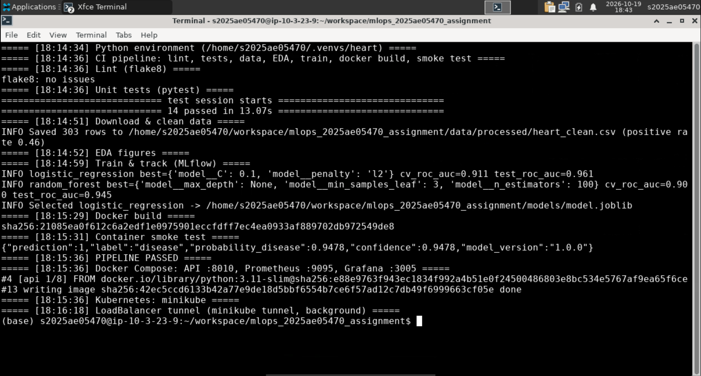
Fig 3. Pipeline log on the lab VM: lint clean, 14 tests passed, data, EDA, training, Docker build and smoke test, PIPELINE PASSED
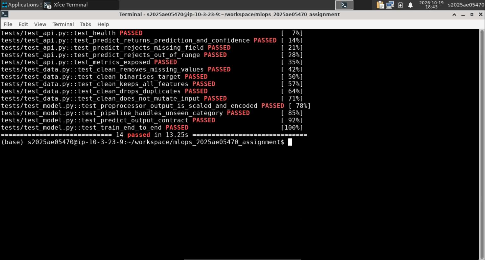
Fig 4. Unit tests on the lab VM: 14/14 passed (data cleaning, preprocessing, training, API contract and validation, metrics)
| Metric | Original run | Lab VM |
|---|---|---|
| Logistic Regression: best params | C = 0.1, L2 | C = 0.1, L2 |
| Logistic Regression: CV ROC-AUC / test ROC-AUC | 0.911 / 0.961 | 0.911 / 0.961 |
| Random Forest: CV ROC-AUC / test ROC-AUC | 0.900 / 0.945 | 0.900 / 0.945 |
| Selected model | logistic_regression | logistic_regression |
| Sample prediction (probability of disease) | 0.9478 | 0.9478 |
The results match exactly despite a different OS, a different Python version (3.11 vs 3.12) and different hardware. Pinned dependencies, a fixed random seed and a single sklearn Pipeline make the run deterministic.
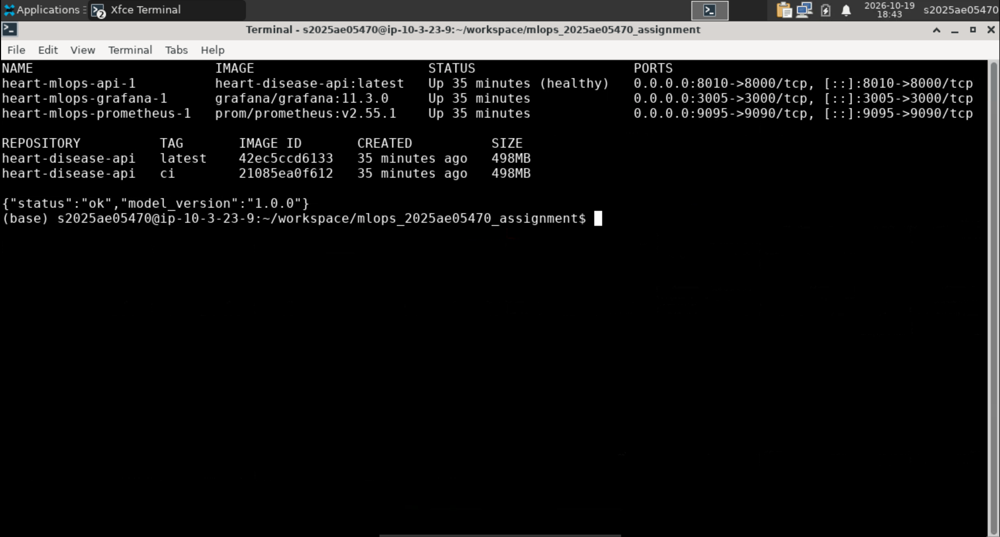
Fig 5. Docker on the lab VM: Compose stack running (API healthy), images built, /health OK
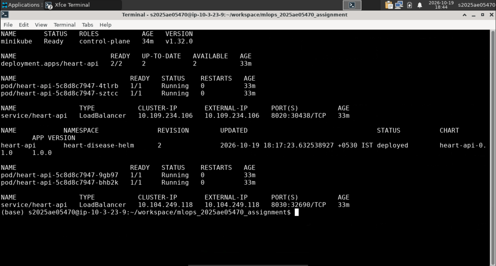
Fig 6. minikube on the lab VM: node Ready; manifest deployment 2/2 with LoadBalancer 10.109.234.106:8020; Helm release heart-api deployed with 2 pods and LoadBalancer 10.104.249.118:8030
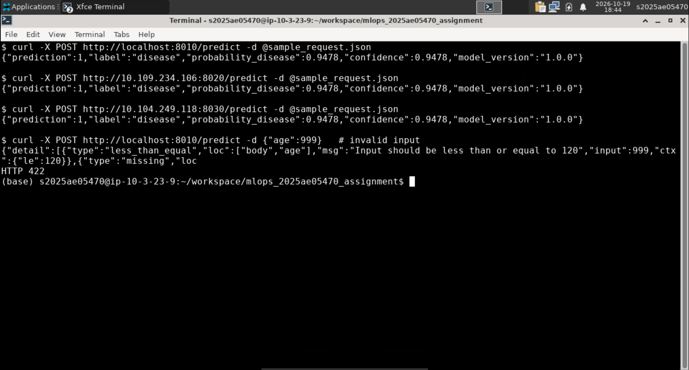
Fig 7. Endpoint verification: Docker Compose, Kubernetes manifest and Helm all return the same prediction; invalid input is rejected with HTTP 422
Load was generated with scripts/send_traffic.sh: varied patient records, with every tenth request deliberately invalid so the error-rate panel has something to show.
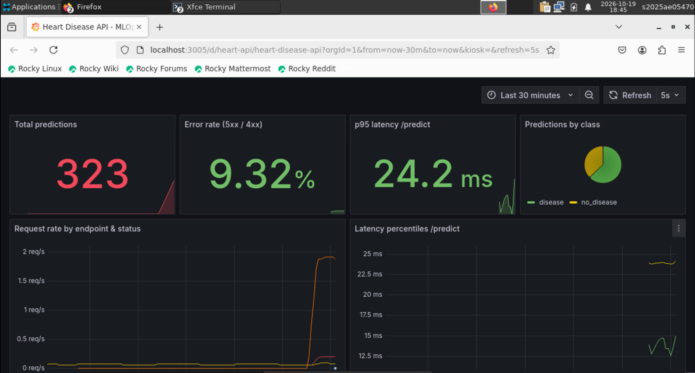
Fig 8. Grafana on the lab VM: 323 predictions, 9.3% error rate (the deliberate invalid requests), p95 latency 24 ms, class mix, request rate and latency percentiles
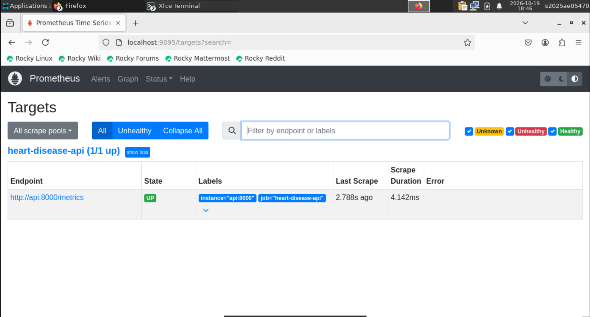
Fig 9. Prometheus target heart-disease-api UP, scraped every 5 s
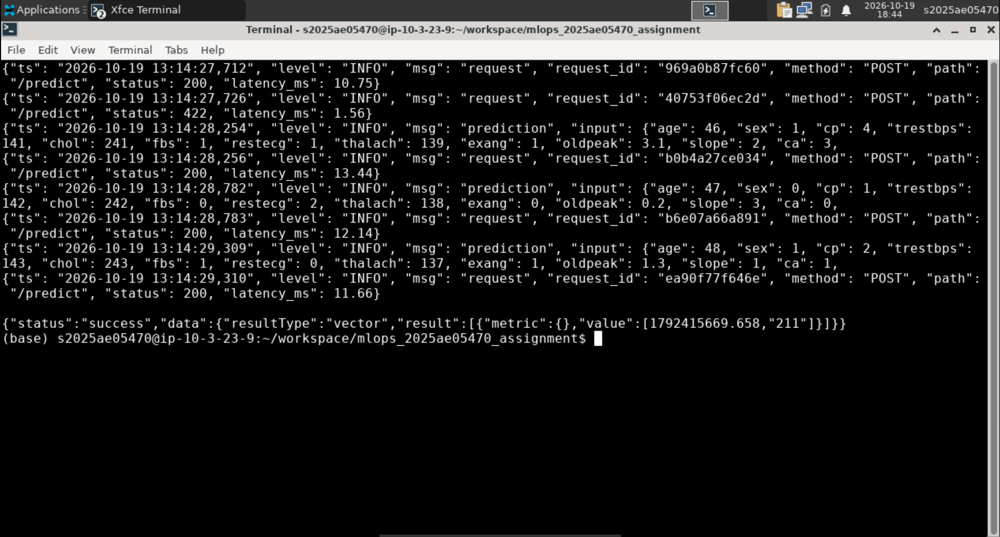
Fig 10. Structured JSON request and prediction logs (request_id, status, latency, inputs) and the Prometheus prediction counter
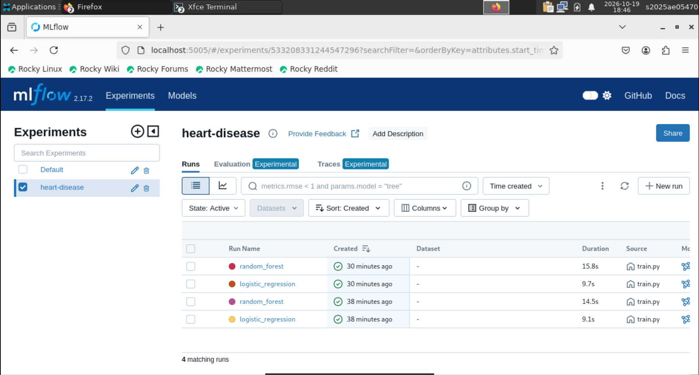
Fig 11. MLflow UI on the lab VM: experiment heart-disease with the tracked runs (Logistic Regression and Random Forest, two pipeline executions)
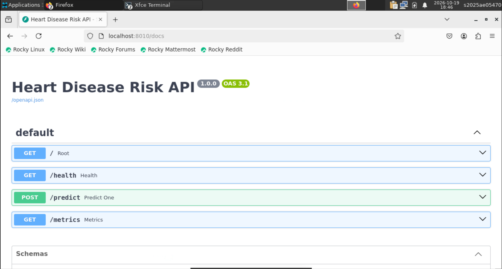
Fig 12. FastAPI Swagger UI served from the container on the lab VM
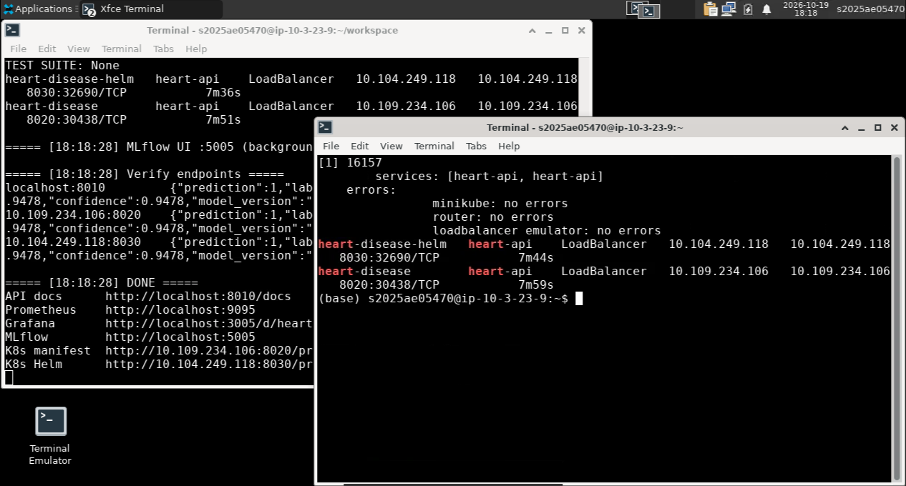
Fig 13. End of the setup script on the lab VM: LoadBalancers assigned, all endpoints verified, DONE; the second terminal shows minikube tunnel with no errors
| Service | URL inside the lab VM |
|---|---|
| API (Swagger) | http://localhost:8010/docs |
| API on Kubernetes (manifest) | http://10.109.234.106:8020/predict |
| API on Kubernetes (Helm) | http://10.104.249.118:8030/predict |
| Prometheus | http://localhost:9095 |
| Grafana (admin / admin) | http://localhost:3005/d/heart-api |
| MLflow | http://localhost:5005 |
minikube tunnel and can change when a new VM is provisioned. The script prints the current addresses at the end of each run. After a VM is terminated, only ~/workspace remains (repository, data, trained model, MLflow runs and lab_setup.log); re-running scripts/lab_setup.sh rebuilds the rest.scripts/lab_setup.sh: one-command build and deploy for the Prayogshala VMscripts/send_traffic.sh: traffic generator for the monitoring demoscreenshots/lab/: evidence captured from the lab VM (Figures 1–12)